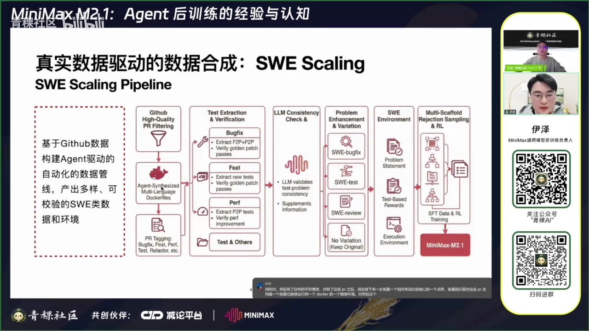
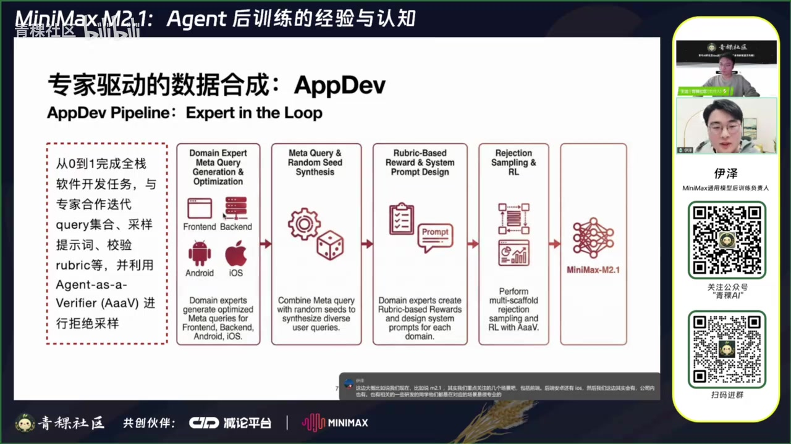
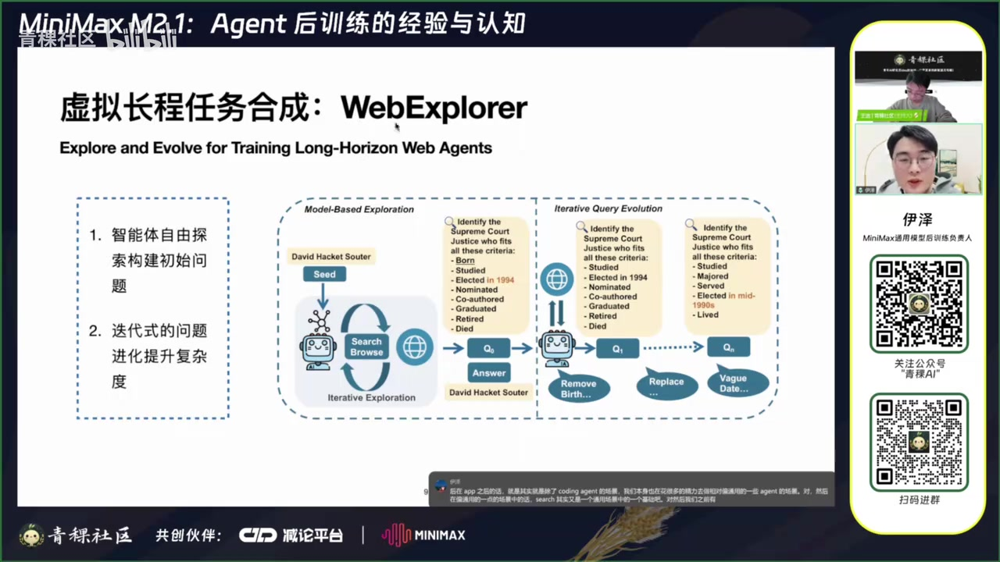
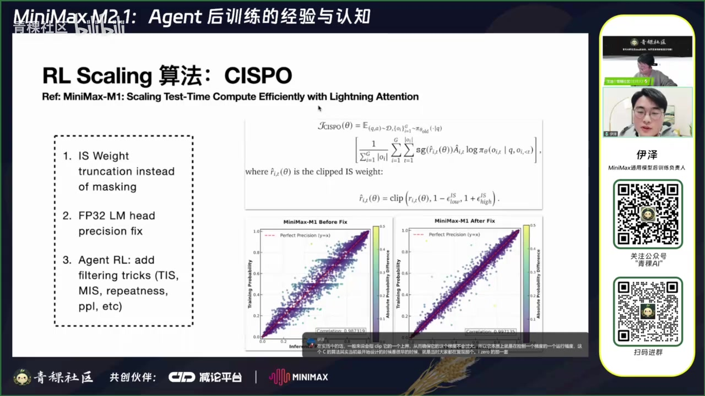
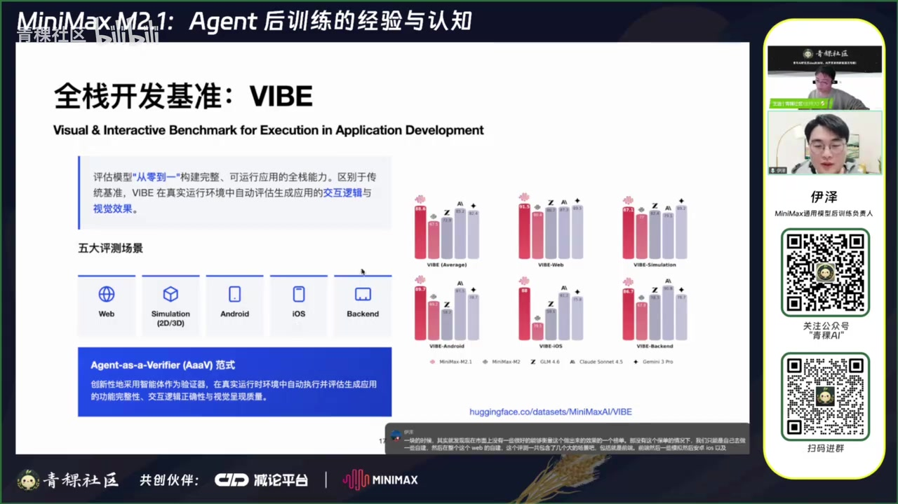
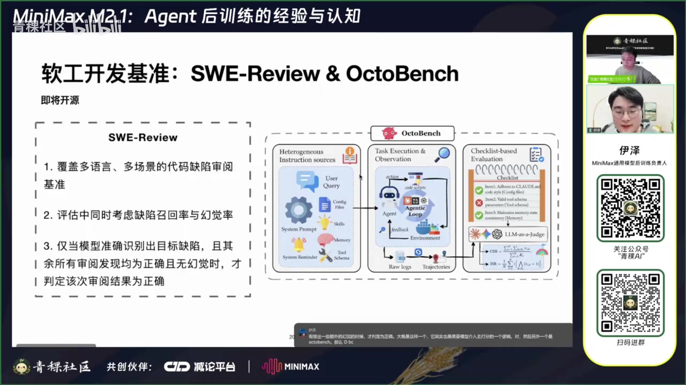

GitHub PR、AppDev 与 Web 搜索分别对应不同验证难度，不能用一套静态标注逻辑覆盖。
01
Executive summary
核心结论：Agent 后训练首先是一项数据与系统工程
这场分享把“数据”置于算法之前：先构造可运行环境、可校验任务和真实脚手架轨迹，再谈 SFT、拒绝采样与 RL。模型能力的上限取决于任务覆盖、奖励可信度、轨迹真实性和训练稳定性共同形成的闭环。
多脚手架 rollout、工具调用、上下文管理和子 Agent 都要进入训练分布。
编译、交互、轨迹与分散指令都需要真实执行，单一最终答案或截图不够。
×
能力是乘法系统
有效 Agent 能力 ≈ 任务覆盖 × 环境真实性 × 奖励可信度 × rollout 质量 × 优化稳定性 × 评测贴近度。任一项接近零，单纯扩大模型或采样量都难以补救。
02
SWE data scaling
把 GitHub 历史变成可验证的软件工程任务
00:01:35原始数据来自高质量 PR 与 commit。Agent 先在沙箱中反复 build，构建可运行 Docker 环境；随后按 Bugfix、Feature、Performance、Test、Review 等类型分流，因为每类任务的“正确性”定义不同。
01筛选 PR合并状态、测试与质量规则
02构建环境Agent 迭代 Docker build
03抽取验证按任务类型设计测试
04一致性检查补齐自包含问题信息
05SFT / RL多脚手架拒采与在线训练

抽取 fail-to-pass 与 pass-to-pass；后者防止修复引入回归。
新增功能往往没有传统 fail-to-pass，需要围绕新增测试重定义验证。
验证功能保持通过，同时确认性能变化稳定且显著。
00:12:31演讲者称，M2.1 阶段已覆盖 10 种以上主流语言、1 万以上可运行仓库和 14 万以上 issue。更关键的是，一份真实 PR 能被变形成 bug 修复、测试生成、代码审阅等多种同源任务。
!
LLM 一致性检查是必要过滤
真实 PR 的描述与测试并不总是一致。模型需要判断题目是否可解，并在关键信息缺失时补齐问题描述；否则训练样本可能天然无解。
03
AppDev · Expert in the loop
开放式开发没有固定测试，需要专家与 Agent 共同当裁判
00:14:07从零开发前端、后端、Android 或 iOS 应用，输出空间远大于仓库修复，无法预先写死一套测试。视频采用 expert-in-the-loop：领域专家设计元问题、随机种子、rubric 与系统提示，再通过拒绝采样、RL 和 Agent-as-a-Verifier 构造数据。

控制技术栈与任务类型，同时组合出多样用户请求。
采样时注入专家最佳实践，训练时去掉系统提示，使行为成为模型默认习惯。
真正部署应用、操作界面、观察状态变化，再按 rubric 评分。
≈
rubric 无法完全自动生成
问答中明确表示，rubric 主要依赖领域专家；对稳定性而言，能够明确判断的布尔检查通常比模糊连续打分更可靠。
04
Long-horizon search
WebExplorer：先探索，再让问题逐步进化
00:19:44智能体从一个随机实体出发自由浏览，把沿途发现的关联线索合成初始问题。随后通过删除、替换和模糊化显眼线索，使问题无法一次搜索命中，只能沿多跳证据链逐步求解。

SEED随机实体人物、球队、地点等
EXPLORE自主浏览收集可连接事实
SYNTHESIZE生成初题答案由完整轨迹支持
EVOLVE删 / 换 / 模糊移除直接检索入口
FILTER拒绝采样保留可解且答案唯一的题
视频称，问题进化使平均解决轮数由 7.9 增至 9.9。问答进一步强调：模糊化不能保证零错误，因此仍要用前期拒绝采样筛掉不可解或答案不唯一的样本。
05
Forge framework
对 Agent 内部逻辑做最小假设
00:25:02Forge 通过四类接口接入任意黑盒 Agent：preprocess、run、postprocess、calculate_reward。即使没有源代码，也可以在沙箱安装程序、替换底层模型服务并记录完整请求日志。

推理服务保存每轮 prompt、response、log-prob；数据协调层选择重要子 Agent 轨迹并忽略无关请求。
仅合并完全一致的多轮前缀以降低训练复杂度；不能只按第一轮 query 粗略拼接。
支持不同上下文管理、memory、规则注入以及 multi-agent 工作流。
多脚手架训练避免模型只适配简单 ReAct，而无法理解真实系统提醒、Skill 与工具约束。
06
RL scaling · CISPO
稳定训练的三个关键修复
00:29:01视频延续 MiniMax M1 提出的 CISPO，并针对 Agent 多轮工具调用带来的更极端 off-policy 轨迹加入过滤策略。
不是把越界 token 完全 mask，而是截断重要性采样权重，保留梯度同时控制方差。
提高训练与推理概率一致性。演讲者称这一精度修复解决了大模型 reward 不涨的问题。
利用 TIS、MIS、重复度、困惑度等统计量过滤被工具噪声放大的离群轨迹。

↗
算法选择与模型架构相对解耦
问答中认为，CISPO、GRPO 等上层策略优化方法对 MoE 与 Dense 的适配差异不大；MoE 仍可能需要处理路由稳定性等更底层问题。
07
Evaluation
评测必须进入真实运行状态
分享介绍三个自建基准，分别覆盖开放式应用开发、代码审阅与 Agent 运行过程中的分散指令遵循。
| 基准 | 评估对象 | 验证方式 | 解决的盲区 |
|---|---|---|---|
| VIBE | 前端 / 后端 / Android / iOS 开发 | 编译执行 → 界面交互 → 视觉基础质量 | 静态截图看不出交互与业务缺陷 |
| SWE-Review | 多语言代码缺陷审阅 | 同时考察缺陷召回与幻觉率 | 提出很多“问题”不代表审阅正确 |
| OctoBench | Agent 场景指令遵循 | checklist / rubric + LLM-as-a-Judge | 指令散落在 system、skill、memory、tool schema/result |


演讲中的榜单成绩和外部模型对比均为讲述者 / MiniMax 自述，本报告未进行独立复测。
08
Q&A takeaways
问答环节补充的工程经验
数据配比从 scaling 结论导出
各方向先独立扩量，观察何时饱和；最终混合比例由有效数据量自然形成。
难度用当前策略的 pass rate 衡量
在 SFT 后模型上跑 RL 样本，得到更贴近当前 policy 的难度估计。
奖励首先要防 hack
清理未来 commit、答案泄漏和可绕过验证器的捷径。
长上下文问题与训练分布相关
训练数据过短时，长上下文容易重复循环；可补齐分布并在 rollout 时过滤重复轨迹。
沙箱是大规模基础设施
演讲者称基于 Docker + Kubernetes，最大同时运行量约 10 万；同时启动量较小。
结果与轨迹可以双重校验
除最终答案外，可用规则或 rubric 过滤工具失败多、路径质量差的轨迹。
i
证据与转写边界
本报告基于公开视频自动转写与逐帧检查。Forge、CISPO、VIBE、SWE-Review、OctoBench 等术语已结合幻灯片校正；模型规模、数据量、并发量和榜单比较均按演讲者表述呈现，未做外部独立核验。